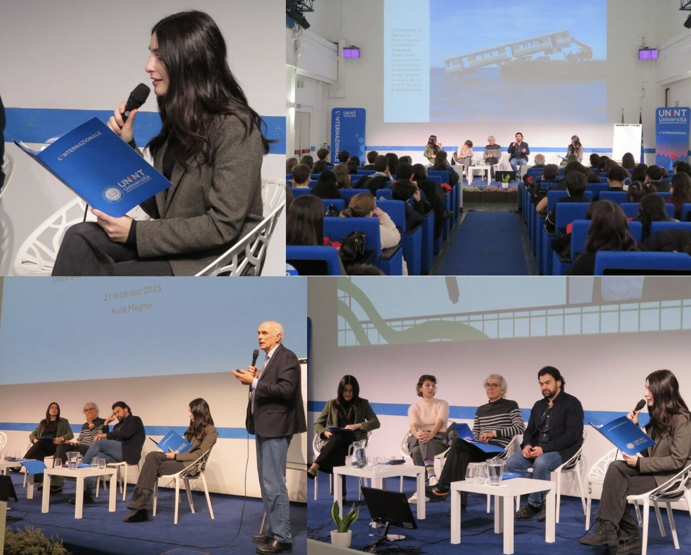
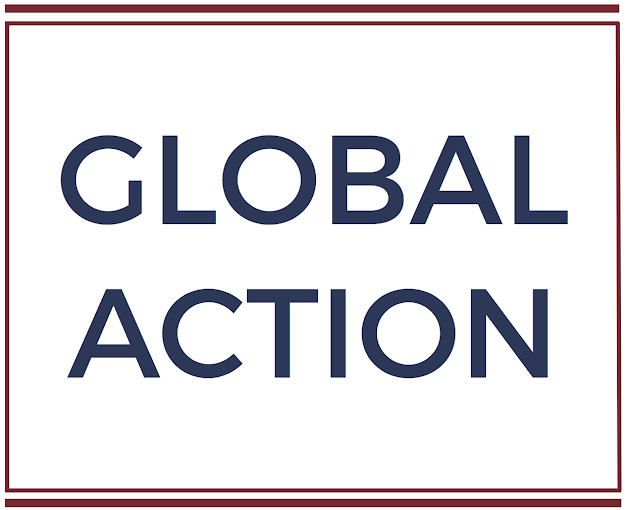
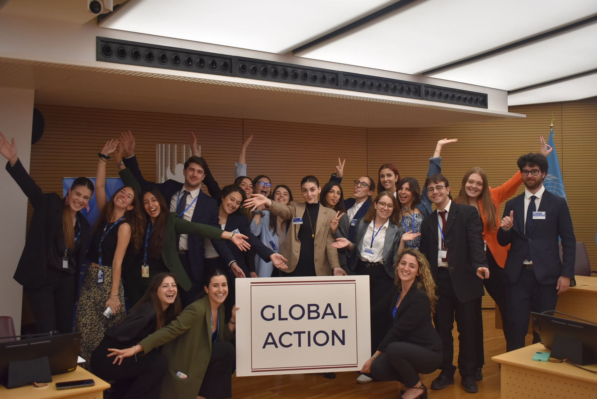
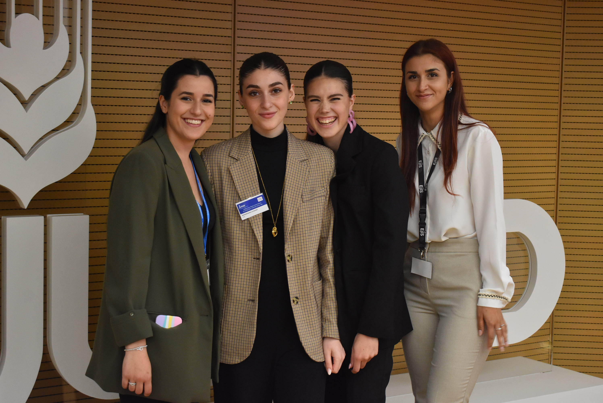

Work Experience
Research Experience
European Youth Think Tank
Policy Analyst
Socioeconomic Research Assistant
John Cabot University
Research Assistant
to professor Bogdan G. Popescu
Experiences
Global Action
(oct.2023-oct.2025)
Event Manager
(oct.2023-oct.2025)
At Global Action, I helped launch Global Action Insight, a seminar series at UNINT in Rome that introduced high school students to diplomacy and global issues. I helped develop the themes, coordinate speakers, and present and moderate sessions.
Women Empowerment and Leadership in the International Context (29 January 2025):I co-presented the inaugural seminar, introducing speakers from diplomacy, human rights, and international organisations. The discussion explored women’s leadership and encouraged students to see how they could contribute to their communities.
Climate Change (21 February 2025): organised and moderated a seminar that gave students a space to discuss climate change as a global challenge and consider the role of international cooperation.

### Team Coordinator (oct.2024-oct.2025) as a Team Coordinator, i would manage a group of six interns within the diplomacy education project, and collaborate in close contact with functionaries from different embassies ### Bureau Intern
Overview:
As a Junior Team Intern at Global Action, I supported the administrative and logistical aspects of our projects. My work focused on enhancing operational efficiency and fostering collaboration across diverse teams and international partners. In particular, I was assigned to the Diplomacy Education project, where i would collaborate with different embassies on the Italian territory. keeping them in coontact with different italian highschools. the goal was to ensure quality education to highschool students and introduce them to the world of diplomacy.

Key Responsibilities
Event Coordination
Assisted in organizing educational events, such as local school visits and the Global Action Model United Nations.Communication and Collaboration
Facilitated effective communication between diplomats, educators, and organizational partners.Database Management
Managed files and ensured timely updates on Google Drive to support project efficiency.Document Preparation
Drafted reports, emails, and forms to support organizational needs.
Achievements
Leadership and Initiative
Enhanced Organizational Efficiency
Cross-Cultural Communication
Administrative Capabilities
GAMUN -Global Action Model United Nations
My Role at GAMUN 2024 (20-23 May)
In May 2024, I had the honor of contributing to the seventh edition of the Global Action Model United Nations (GAMUN), hosted at the International Fund for Agricultural Development in Rome. This event is a flagship project of Global Action Italy’s Diplomacy Education, dedicated to promoting accessible, high-quality education on a global scale.
My involvement began in the intricate planning and organizational phases, where I was part of the managerial team responsible for the logistical and strategic execution of the conference. This role required meticulous attention to detail and a deep understanding of how to cultivate an environment conducive to fruitful discussions and meaningful outcomes.
Following my responsibilities in management, I transitioned to a pivotal academic role, chairing the World Food Programme (WFP) commission. Here, I guided deliberations on “Building Resilience: Food Assistance for Disaster-Prone Communities” and “Urban Food Insecurity: Strategies for Ensuring Access in Cities.” These discussions aimed to address some of the most pressing challenges in global food security, focusing on innovative and sustainable solutions.
My dual roles at GAMUN 2024 allowed me to leverage both organizational and academic skills. The experience not only reinforced my leadership capabilities but also deepened my commitment to fostering international cooperation and education to address global issues. It was a privilege to learn alongside a team of passionate individuals, all working towards a common goal of making education accessible and effective.

